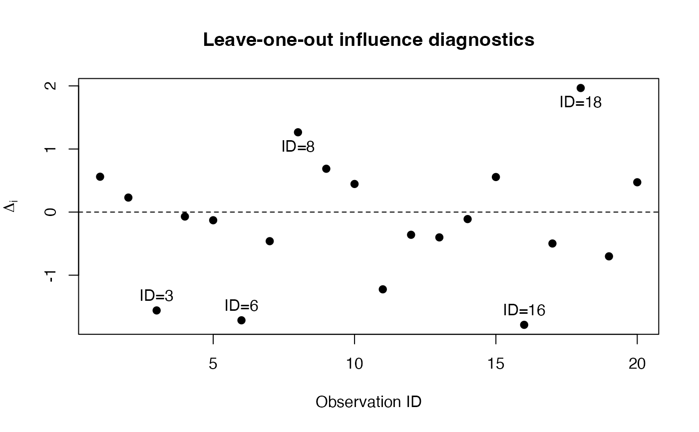

Produces an influence diagnostic plot for an object of class
"ijk_lko".
Usage
# S3 method for class 'ijk_lko'
plot(x, label = 5, pch = 19, ...)
Arguments
- x
An object of class "ijk_lko".
- label
Integer from 0 to the number of observations, giving the
number of most influential observations to label. Default is 5.
- pch
Plotting character.
- ...
Additional graphical parameters passed to
plot.
Value
Produces a diagnostic plot and returns x invisibly.
Details
The vertical axis shows the change in the posterior estimate
after removing observations:
$$
\Delta_i = \hat{\theta}_{(-i)} - \hat{\theta}.
$$
For leave-one-out (k = 1), the horizontal axis corresponds
to observation IDs. Optionally, the most influential observations
can be labelled.
Examples
set.seed(123)
influence <- rnorm(20)
# Leave-one-out (k = 1)
lko1 <- ijk_lko(
estimate = 0,
influence = influence,
k = 1
)
plot(lko1)
